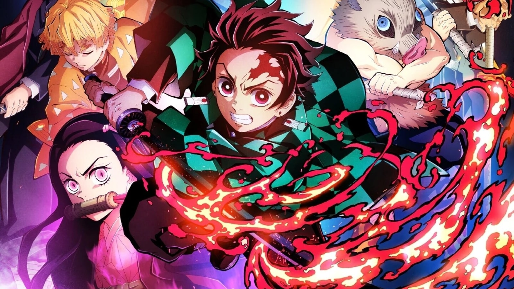
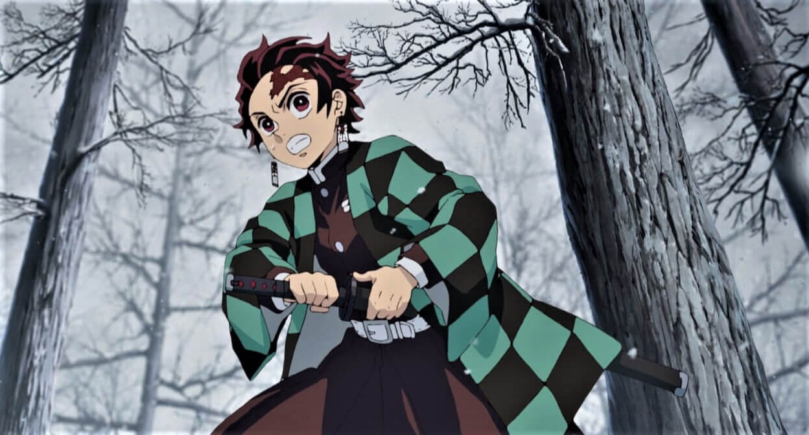

About Demon Slayer
Demon Slayer, also known as Kimetsu no Yaiba in Japanese, is a popular manga and anime series created by Koyoharu Gotouge. The story takes place in a fictional version of Japan where demons lurk in the shadows and prey on humans. The main character, Tanjiro Kamado, becomes a demon slayer after his family is killed by demons, and his younger sister, Nezuko, is turned into a demon. Tanjiro and Nezuko embark on a journey to find a cure for Nezuko and to avenge their family.
The anime adaptation of Demon Slayer, produced by ufotable, has received critical acclaim for its stunning animation, music, and character development. The first season aired in 2019 and became a cultural phenomenon in Japan and beyond. It has since been followed by a movie, Demon Slayer: Mugen Train, which continues the story of the main characters and introduces new ones. A second season of the anime has also been announced, much to the excitement of fans.
Characters
Demon Slayer features a cast of memorable characters, each with their own unique personalities, abilities, and backstories. Click on the "Characters" link in the navigation bar above to learn more about them.

Story
Demon Slayer is a captivating tale set in a world plagued by demons. Tanjiro, seeking revenge and justice, joins the Demon Slayer Corps and battles formidable foes. It explores themes of family, sacrifice, and redemption, showcasing breathtaking animation and intense battles that leave a lasting impact.
